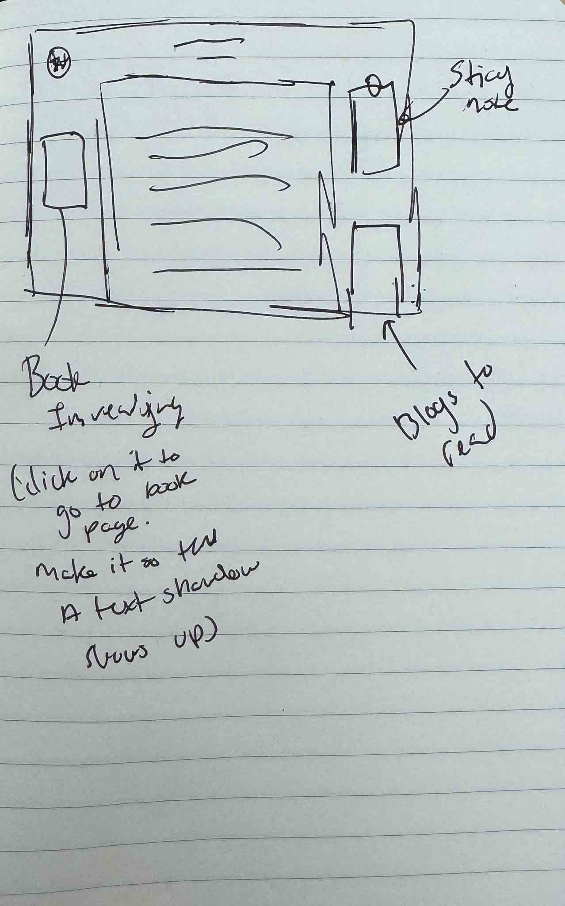
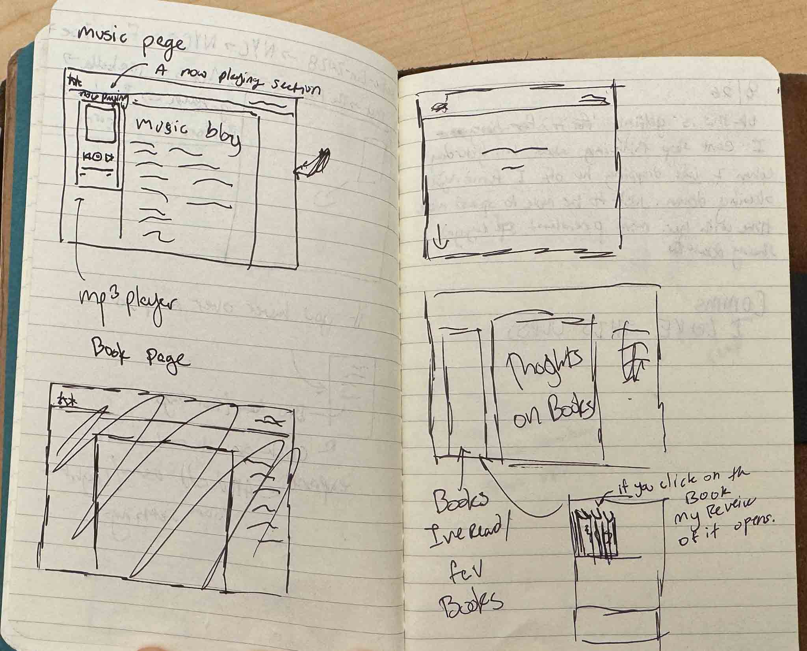
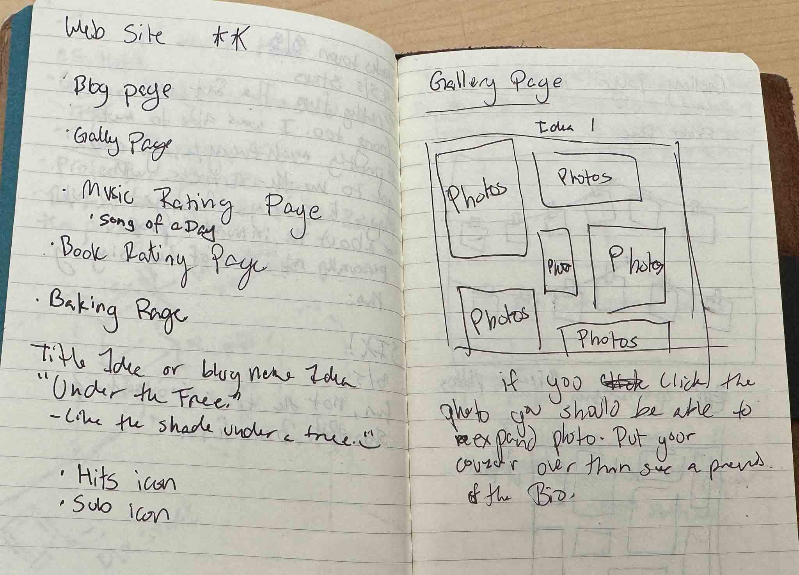
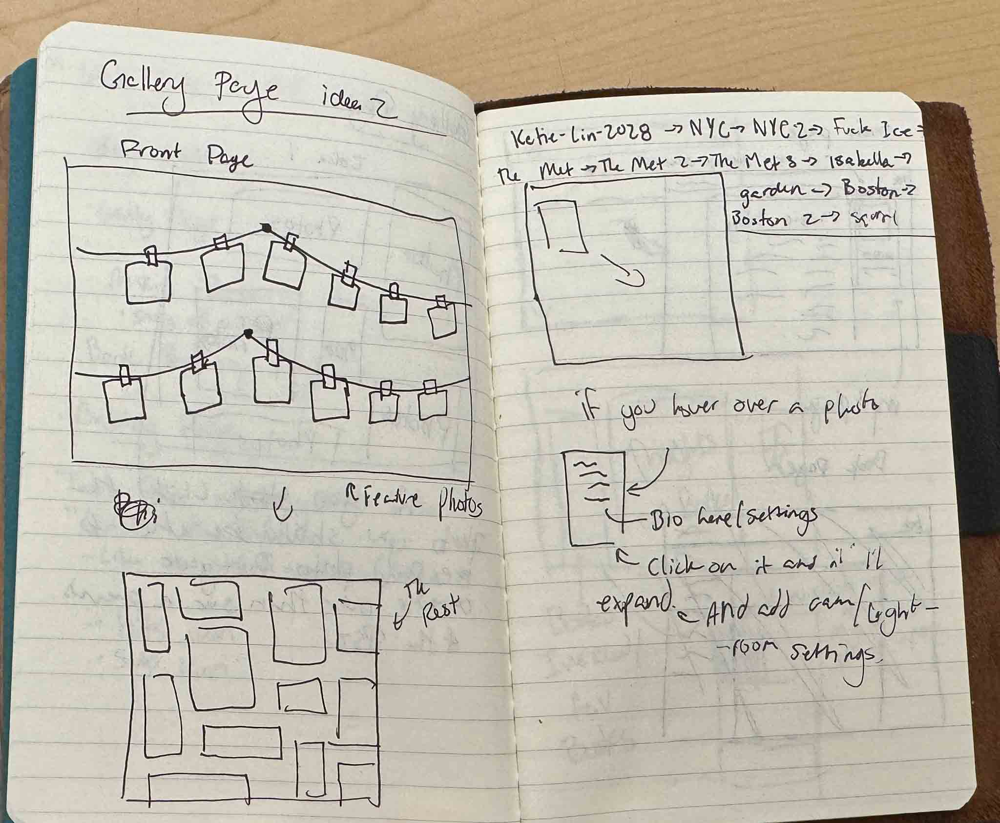

This is for anyone who would like to know more about creating their own webstie or blog :)
The first thing youd need is to set up a GitHub account, and then you can use GitHub Pages to host your website for free. You can also use a custom domain name if you have one, or you can use the default GitHub Pages domain. I used Namecheap to purchase my domain name. It was only a couple of dollars.
For the deisgn of the website I, was lucky to have a 5 hour train ride so I had a few hours to brainstorm and sketch out the design of the website. As well as using pintrest, the help of my friends, and tiktok to get some inspo.




For the visit counter, I used Erica's resource page so I'll just copy and paste here:
<script>
// Counter is available as a global variable
const counter = new Counter({ workspace: 'your-workspace-slug' });
counter.up('your-counter-slug')
.then(result => {
// for debugging purposes
console.log('Counter result:', result);
console.log(`Visits: ${result.data.up_count}`);
// update the counter display
document.getElementById('counter').textContent = result.data.up_count;
})
.catch(err => console.error(err));
</script>